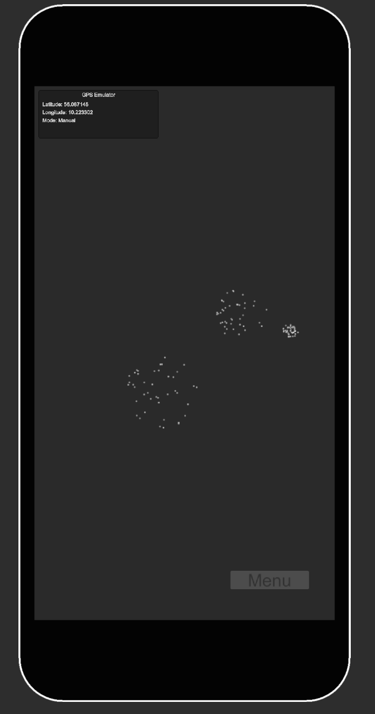
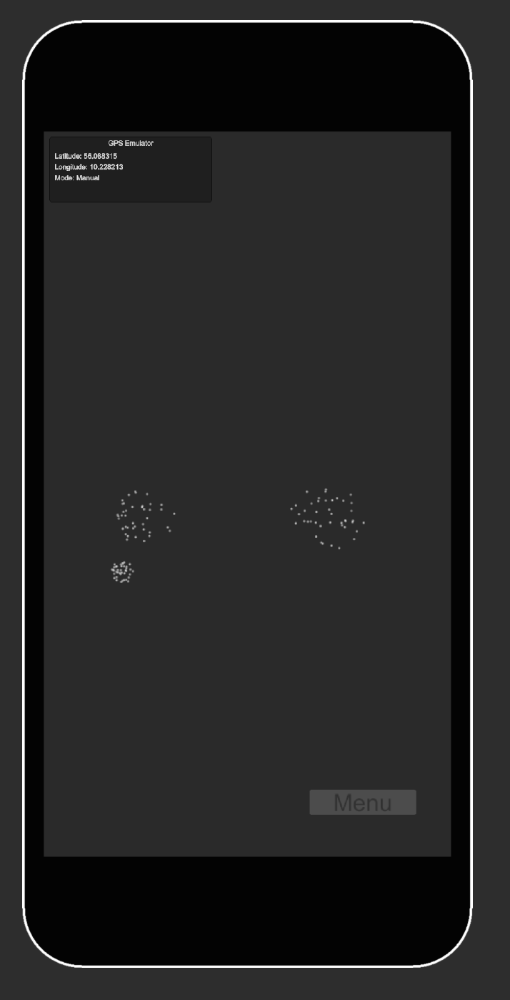

01 / Området
Bevægelse former forløbet.
GPS forbinder lyd med geografiske områder. Afstande omsættes til løbende ændringer, så kompositionen kan udvikle sig mellem stederne.
Adaptiv lyd til natur, museer og kultursteder
SUS lader gæstens position og afstand forme musik, stemmer og fortællinger i realtid. En åben lydoplevelse, der udfolder sig gennem bevægelsen på stedet.
Lyden er proof of concept. Musikken og lydene i begge videoer demonstrerer systemets muligheder. Lydindholdet udvikles til jeres sted og fortælling.
I den viste prototype danner 24 lydspor et foranderligt lydlandskab. Bevægelsen mellem områder former, hvilke lag der træder frem.
Felttest / Utterslev Mose / 4 deltagere
Observationerne og deltagernes svar peger på det, SUS er designet til: at skabe plads til at lytte og rette opmærksomheden mod omgivelserne.
5/5
Gennemsnit i spørgeskemaet · 4 deltagere
4/4
Observeret under felttesten
0/4
Observeret under felttesten
“jeg reflekterede mere over naturen”
Thor · deltager i felttesten ved Utterslev Mose
Resultaterne stammer fra en eksplorativ felttest med fire deltagere. De beskriver denne prototype og er ikke dokumentation for en generel effekt. Beacon-funktionen er tilføjet senere og indgik ikke i denne test.
Udsagnet “Appen forstyrrede min oplevelse” fik et lavt gennemsnit på 1,75/5. Oplevelsen varierede dog: På spørgsmålet om, hvorvidt lyden hørte hjemme på stedet, lå svarene fra 3 til 5. Den lille undersøgelse bruges som grundlag for videre udvikling og afprøvning.
Platformen / Fra sted til lydoplevelse
SUS er en platform til at skabe stedsspecifikke lydoplevelser. Musik, stemmer og atmosfærer kan formes af gæstens position og afstand — med plads til at udforske i eget tempo og uden en fast rækkefølge.
01 / Området
GPS forbinder lyd med geografiske områder. Afstande omsættes til løbende ændringer, så kompositionen kan udvikle sig mellem stederne.
02 / Detaljen
Den nye udgave bruger også beacons til afstandsmåling. Det giver mulighed for finere detaljer, når gæsten nærmer sig udvalgte punkter.
03 / Oplevelsen
Lydlag kan træde frem, forsvinde og kombineres undervejs. Den samme platform kan danne ramme om musikalske landskaber og fortællinger i lyd.
Udviklet i Unity med C# og FMOD. GPS forbinder oplevelsen med større områder, mens beacons giver mulighed for at arbejde med nærhed til udvalgte punkter. Opsætning og afstande tilpasses og afprøves på det konkrete sted.
Metoden / Faglighed omsat til oplevelse
SUS forbinder lydkunst, stedslig perception og adaptiv komposition. Fire principper former oplevelsen — fra gæstens frie bevægelse til samspillet mellem lyden og stedet.
Med afsæt i Tim Ingolds begreb wayfaring følger oplevelsen gæstens egen vej. Der er ikke et bestemt mål, man skal nå: Bevægelsen og opdagelsen af stedet er selve oplevelsen.
Stedets åbenhed, dybde og teksturer bliver kompositorisk materiale. I prototypen møder åbne landskaber lange strygerdroner, mens bevægelsen mod vandet opløser pulsen i mere flydende lyd.
Lyden komponeres i dialog med stedet og med plads til omgivelsernes egne lyde. En enkel brugerflade og mulighed for at tilpasse lydstyrken understøtter den lyttende oplevelse.
Genkendelige motiver og flydende overgange holder oplevelsen sammen, selv når gæsten vælger sin egen vej. Lydforløbet får en form, der kan rumme forskellige bevægelser.
Metoden omsætter stedets kvaliteter til musik og lyd: åbenhed kan blive til lange toner og rumlig dybde, mens vandets bevægelse kan blive til flydende teksturer. Lydøkologi og adaptiv komposition giver et fælles afsæt for at skabe sammenhæng mellem stedet, lyden og gæstens bevægelse.
Felttesten omhandler natur og musik. Museer, kulturarv og lydfortællinger er mulige anvendelser, som skal udvikles og afprøves i deres egen sammenhæng.
02 / Fortællinger i lyd
SUS kan også bruges til at udforske fortællinger. Denne tidlige demo bruger krigslyde som eksempel på, hvordan bevægelse kan føre gæsten gennem forskellige lydlige scener.
Lyden er proof of concept. Denne tidlige demo viser et muligt fortælleformat. Lydmaterialet er et eksempel på systemets anvendelse.
Skærmbilleder fra prototypens visuelle lydfelt. De viser udviklingsarbejdet bag oplevelsen.




Muligheder / Et udgangspunkt for jeres projekt
Lydvandringer, der inviterer gæsterne til at opdage stedets stemninger og detaljer.
Stemmer og lydlige scener, der kan åbne fortællinger omkring udvalgte steder.
Kompositioner, hvor publikums bevægelse bliver en del af værkets form.
Stedsspecifikke lydoplevelser, der giver gæster en ny måde at udforske området på.
Vi begynder med jeres sted, gæster og formål. Derfra formes lydindhold og bevægelse, systemet tilpasses området, og oplevelsen afprøves med brugere.